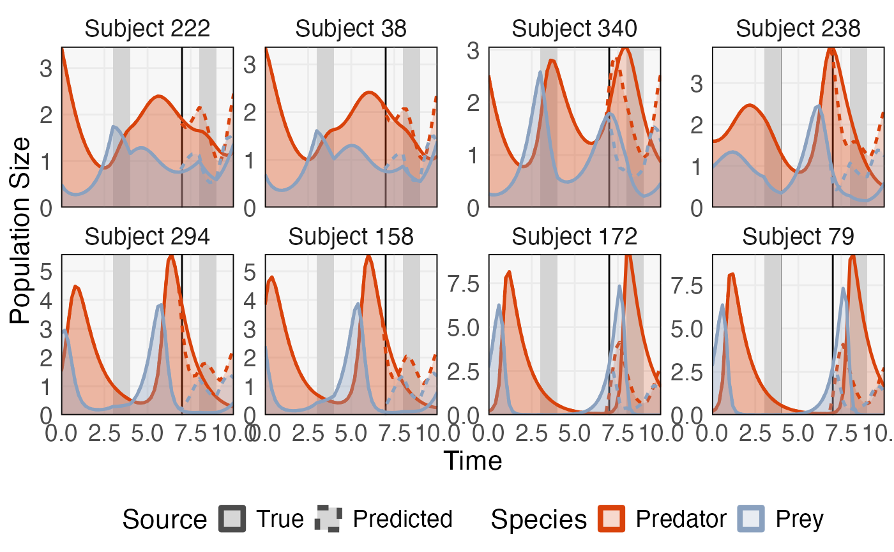
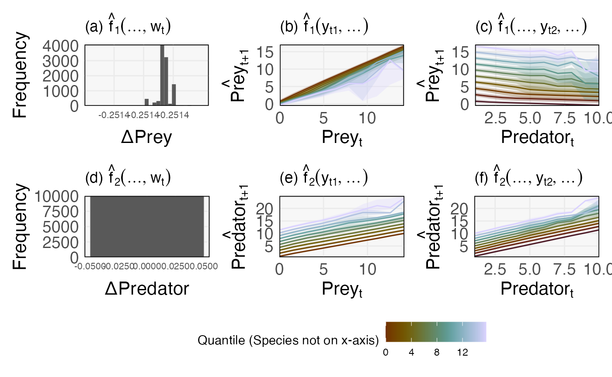

Example with Generalized Lotka Volterra
glv.Rmd
library(glue)
library(mbtransfer)
library(patchwork)
library(scico)
library(seqtime)
library(tidyverse)
library(DALEX)
theme_set(tfPaper::my_theme())
set.seed(20240404)An example with perturbations.
ts <- simulate_oscillator(perturb = TRUE) |>
to_ts()
fit <- mbtransfer(ts[, 1:35], 1, 1, alpha = 1e-2, lambda = 1e-2, eta = 0.01, nrounds = 5e3)
ts_missing <- subset_values(ts, 1:35)
ts_preds <- predict(fit, ts_missing)
errors <- list()
diff <- ts_preds - ts
for (i in seq_along(diff)) {
errors[[i]] <- mean(abs(diff@series[[i]]@values))
}
ix <- order(unlist(errors))[c(1, 2, 124, 125, 249, 250, 499, 500)]
plot_ts(ts[ix], ts_preds[ix]) +
guides(
linetype = guide_legend(override.aes = list(linewidth = 2, col = "#4c4c4c")),
col = guide_legend(override.aes = list(linewidth = 2))
)
ggsave("glv_dynamics.png", width=11, height=5)
patches <- patchify_df(ts[ ,1:35], 1, 1, interaction = "search")
patches$x <- mbtransfer:::append_interactions(patches$x, patches$interactions)
ix <- sample(nrow(patches$x), 1e4)
explainer <- explain(fit@parameters[[1]], patches$x, patches$y[, 1])
#> Preparation of a new explainer is initiated
#> -> model label : xgb.Booster ( default )
#> -> data : 16500 rows 10 cols
#> -> data : rownames to data was added ( from 1 to 16500 )
#> -> target variable : Argument 'y' was a data frame. Converted to a vector. ( WARNING )
#> -> target variable : 16500 values
#> -> predict function : yhat.default will be used ( default )
#> -> predicted values : No value for predict function target column. ( default )
#> -> model_info : package Model of class: xgb.Booster package unrecognized , ver. Unknown , task regression ( default )
#> -> predicted values : numerical, min = -10.61917 , mean = 1.02592 , max = 13.59317
#> -> residual function : difference between y and yhat ( default )
#> -> residuals : numerical, min = -11.37599 , mean = -0.001860704 , max = 10.62956
#> A new explainer has been created!
cp_profile <- predict_profile(explainer, patches$x[ix, ])
tax1 <- plot_cp_profile(cp_profile)
explainer <- explain(fit@parameters[[2]], patches$x, patches$y[, 1])
#> Preparation of a new explainer is initiated
#> -> model label : xgb.Booster ( default )
#> -> data : 16500 rows 10 cols
#> -> data : rownames to data was added ( from 1 to 16500 )
#> -> target variable : Argument 'y' was a data frame. Converted to a vector. ( WARNING )
#> -> target variable : 16500 values
#> -> predict function : yhat.default will be used ( default )
#> -> predicted values : No value for predict function target column. ( default )
#> -> model_info : package Model of class: xgb.Booster package unrecognized , ver. Unknown , task regression ( default )
#> -> predicted values : numerical, min = -0.135135 , mean = 2.037226 , max = 20.04323
#> -> residual function : difference between y and yhat ( default )
#> -> residuals : numerical, min = -20.03284 , mean = -1.013167 , max = 10.67573
#> A new explainer has been created!
cp_profile <- predict_profile(explainer, patches$x[ix, ])
tax2 <- plot_cp_profile(cp_profile)
((tax1[[1]] + labs(x = "ΔPrey", y = "Frequency", title = expression("(a)"~ hat(f)[1](..., w[t])))) +
(tax1[[2]] + labs(x = expression(Prey[t]), y = expression(hat(Prey)[t + 1]), fill = "Quantile (Species not on x-axis)", col = "Quantile (Species not on x-axis)", title = expression("(b)" ~ hat(f)[1](y[t1], ...)))) +
(tax1[[3]] + labs(x = expression(Predator[t]), y = expression(hat(Prey)[t + 1]), fill = "Quantile (Species not on x-axis)", col = "Quantile (Species not on x-axis)", title = expression("(c)" ~ hat(f)[1](..., y[t2], ...))))) /
((tax2[[1]] + labs(x = "ΔPredator", y = "Frequency", title = expression("(d)"~ hat(f)[2](..., w[t])), fill = "Quantile (Species not on x-axis)", col = "Quantile (Species not on x-axis)")) +
(tax2[[2]] + labs(x = expression(Prey[t]), y = expression(hat(Predator)[t + 1]), fill = "Quantile (Species not on x-axis)", col = "Quantile (Species not on x-axis)", title = expression("(e)" ~ hat(f)[2](y[t1], ...)))) +
(tax2[[3]] + labs(x = expression(Predator[t]), y = expression(hat(Predator)[t + 1]), fill = "Quantile (Species not on x-axis)", col = "Quantile (Species not on x-axis)", title = expression("(f)" ~ hat(f)[2](..., y[t2], ...))))) +
plot_layout(guides = "collect")
ggsave("glv_profiles.png", width=10, height=6)